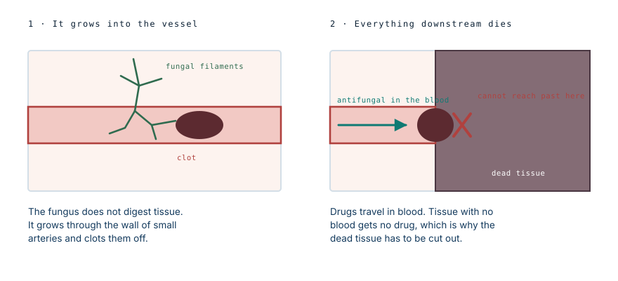

It does not eat flesh. It cuts off the blood.
Carolina Bowen was 20, studying sociology, and had type 1 diabetes. She did not wipe her insulin pump site with an alcohol swab. She arrived at hospital in septic shock with organ failure and an infection eating into her left arm, spent September in an induced coma, had five operations, and died during one of them.
What mucormycosis is
Mucorales are ordinary environmental moulds. They live in soil, dust, compost, damp building materials and decaying vegetation, and almost everyone inhales their spores routinely without consequence. A working immune system disposes of them silently.
They cause disease when two conditions are met at once: the spores get past the skin, and the person's defences against this particular family of organisms are impaired. An insulin infusion site can supply the first condition, and diabetes supplies the second.
Why diabetes specifically
This is not a general point about infection risk. Mucorales have a particular relationship with diabetes, and there are three separate reasons.
High blood glucose impairs the function of neutrophils, the white cells that would normally kill fungal spores at the point of entry. Second, these moulds grow better in an acidic, sugar-rich environment, which is what diabetic tissue provides when control is poor. Third, and least known: in diabetic ketoacidosis, acidity causes iron to be released from the proteins that normally keep it locked away, and Mucorales depend on free iron to grow. Ketoacidosis effectively feeds them.
This is why the same organism that most people meet daily and ignore becomes catastrophic in a specific group of patients.
Why it spreads so fast
The name flesh-eating suggests something dissolving tissue as it goes. That is not what happens, and the real mechanism explains the appearance far better.
Mucorales are angioinvasive. The filaments grow through the walls of small arteries and into the channel inside them, where blood clots around the invading fungus. Every piece of tissue supplied by that vessel loses its blood supply and dies.

The spread follows the vascular tree rather than the surface, which is why the damage underneath is always larger than what is visible, and why a lesion that looks like a small dark patch on Monday can involve an entire limb segment by Wednesday.
Why the drip was not working
The consequence of that mechanism is the most useful fact about this infection, and this case demonstrates it about as clearly as a case can.
Drugs reach tissue through the bloodstream. Tissue that has lost its blood supply cannot receive a drug delivered by blood. So the tissue where the fungus is most active is precisely the tissue that intravenous treatment cannot reach.
Carolina was on intravenous antifungals and they were not controlling the infection. Her doctor began irrigating the wound with antifungal directly, putting the drug onto the surface rather than trying to deliver it through a circulation that no longer existed there. By her account, that is what turned it around.
It is worth sitting with that. The failure of the drip was not a dosing problem or a resistant organism. It was a plumbing problem, and the answer was to stop relying on the plumbing.
Five operations, and what they cost
Alongside the antifungals, the treatment was surgical, because dead tissue does not recover and cannot be sterilised. Surgeons remove everything that is not alive and come back to do it again, because the boundary keeps moving. They cut until they reach tissue that bleeds, since bleeding is the only reliable proof of a live blood supply.
She had five such operations. During one of them her heart stopped and she was resuscitated — the event she describes as having died, which in clinical terms was a cardiac arrest on the table.
Amputating the arm at the shoulder was seriously considered. It was avoided, but not without cost: the nerves running from her armpit and shoulder down to the elbow were removed along with the infected tissue. Muscle that loses its nerve supply wastes away regardless of whether the muscle itself was ever infected, which is why she has lost most of the function in that arm and why the wasting continued after the infection was gone.
That trade — nerve for limb — is the one that separates a saved arm from an amputated one in these cases, and it is not a clean win. It is the least bad option available on the day.
The pump is a portal, not a poison
An insulin pump delivers insulin through a small cannula sitting under the skin, held by an adhesive patch, usually changed every two to three days. Millions of people use them safely, and they represent a large improvement in diabetes care.
But the arrangement does create a small, continuous breach in the skin, with a warm occlusive dressing over it. That is a reasonable portal of entry for an organism that needs one. Fungal infection at these sites is documented in the medical literature, both at insulin injection sites where needles were reused and as a complication of pump therapy, though it remains genuinely rare.
The framing of "not cleaning the pump" is a little misleading. The device is not the reservoir. What matters is hand hygiene when handling the infusion set, skin preparation before insertion, changing sites on schedule rather than stretching them, rotating between sites so skin can recover, and not reusing anything designed to be used once.
Healing without grafts
A defect that size would normally be closed with skin grafts. She declined them, having had enough of operating theatres after arresting during one, and chose to let the wound close on its own.
Wounds do heal this way — by secondary intention, filling in from the base with new tissue and contracting inward from the edges — but it is slow and it scars more. Her wound took around fifteen months to close. That is the trade she made knowingly: a much longer recovery in exchange for no further surgery. Her kidneys and lungs recovered, and the arm remains the lasting problem.
On whose fault it was
She has been clear in interviews that she considers the infection her own fault for not cleaning the site properly, rather than a fault of the device.
She is right that the device did not fail. But it is worth saying plainly that an enormous number of people miss the swab, and essentially none of them get Rhizopus in their arm. What happened to her required a rare organism to land in exactly the wrong place at a moment when her defences against that particular family of moulds were down. A lapse in a routine step is not the same thing as causing this, and survivors carrying the whole weight of an outcome this rare is a common and heavy pattern.
The useful version of the lesson is not blame. It is that the swab is doing something, and the reason it matters is not obvious until you see what it is protecting against.
What to actually watch for
Ordinary infusion site irritation is common and usually trivial: mild redness, a little itch from the adhesive, tenderness that settles when the set is moved.
The findings that are not ordinary are worth knowing precisely. Pain out of proportion to how the site looks. Redness that expands over hours rather than days. Any area that turns dusky, grey or black. Firmness or swelling spreading beyond the visible mark. Fever alongside a site that looks wrong. And unexplained loss of glucose control, since infection drives glucose up and can be the first measurable sign.
A black area at an infusion site in someone with diabetes is a same-day emergency department problem, not a wait-and-see. In this infection, the interval between looking manageable and requiring major surgery is measured in hours.
Proportion
Mucormycosis is rare, and it is rare even among people with diabetes and insulin pumps. Site infections are common and almost all of them are bacterial, minor, and resolved by moving the set and, occasionally, a course of antibiotics. Carolina was told she is the only person in the United States known to have survived this infection without an amputation, which tells you both how unusual the outcome was and how unusual the disease is to begin with.
Nothing here argues against using a pump. It argues for treating a site that looks or feels wrong as worth showing to someone the same day, because in the rare case where this is what it turns out to be, the timeline is unforgiving.
What this case teaches
The clearest thing in this case is why the drip failed. The fungus invades small arteries and clots them, so the tissue beyond dies — and a drug carried in blood cannot reach tissue that has no blood. Putting the antifungal straight into the wound worked because it bypassed a circulation that no longer existed. Everything else follows from the same mechanism: the damage runs deeper than the surface shows, the surgery has to be repeated because the boundary keeps moving, and saving the arm meant sacrificing the nerves running through the infected field. The popular name is the least accurate part of the story. Nothing was eaten.